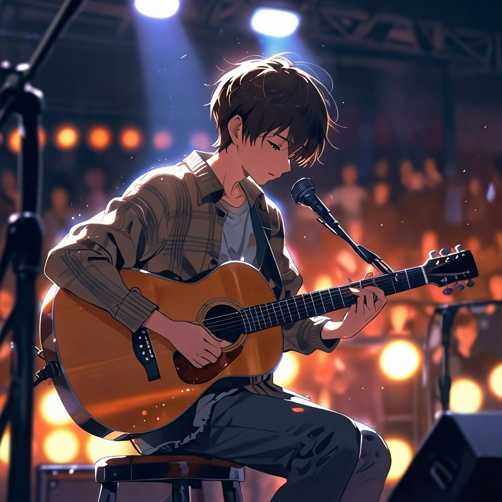

← Bilganlarim
0
Navbatga →
0

Kartochkalarni chapga surganingizda, bilgan so'zlaringiz shu yerda to'planadi.
Ilovada kamchilik yoki xatolik uchrasa, iltimos, uning skrinshotini olib Telegram orqali yuboring. Shikoyat va takliflaringizni ham shu yerga yozing — tez orada ko'rib chiqamiz.
Telegramda yozishBu ism chatda boshqalarga shu nom bilan ko'rinadi.
Do'stlaringiz bilan kanji kartochkalarni so'roq o'yini tarzida almashing — kartochka yuborasiz, ular javobini qaytaradi.
Ochiq xonalardan birini tanlang yoki do'stingiz bergan kodni kiriting.
Bu kodni do'stlaringizga yuboring — ular shu kod bilan xonaga kira oladi.
Boshqa ishtirokchilarni kuting...
Akkauntingizdan chiqasiz. Qayta kirish uchun Google hisobingizni yana tanlashingiz kerak bo'ladi.
Bu effekt kompyuter va telefonni sezilarli darajada sekinlashtirishi hamda batareyani tez sarflashi mumkin. Qurilmangiz sekin ishlasa, uni istalgan vaqt o'chirib qo'yishingiz mumkin.